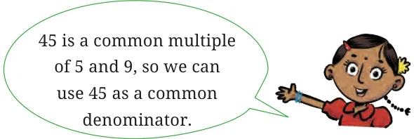

Expressing a fraction in lowest terms can also be done in steps. Suppose we want to express \(\frac{36}{60}\) in lowest terms. First, we notice that both the numerator and denominator are even. So, we divide both by 2, and see that \(\frac{36}{60} = \frac{18}{30}\) . Both the numerator and denominator are even again, so we can divide them each by 2 again; we get \(\frac{18}{30} = \frac{9}{15}\) . We now notice that 9 and 15 are both multiples of 3, so we divide both by 3 to get \(\frac{9}{15} = \frac{3}{5}\) . Now, 3 and 5 have no common factor other than 1, so, \(\frac{36}{60}\) in lowest
terms is \(\frac{3}{5}\) .
Alternatively, we could have noticed that in \(\frac{36}{60}\) , both the numerator and denominator are multiples of 12 : we see that \(36 = 3 \times 12\) and \(60 = 5 \times 12\). Therefore, we could have concluded that \(\frac{36}{60} = \frac{3}{5}\) straight away. Either method works and will give the same answer! But sometimes it can be easier to go in steps.
Figure it Out
Express the following fractions in lowest terms:
- \(\frac{17}{51} b\). \(\frac{64}{144} e\). \(\frac{126}{147} d\). \(\frac{525}{112}\)
7.7 Comparing Fractions
Which is greater, \(\frac{4}{5}\) or \(\frac{7}{9}\) ? It can be difficult to compare two such fractions directly. However, we know how to find fractions equivalent to two fractions with the same denominator. Let us see how we can use it: \(\frac{4}{5} = \frac{4 \times 9}{59} \times = \frac{36}{45} \frac{7}{9} = \frac{7 \times 5}{95} \times = \frac{35}{45}\) .

Clearly, \(\frac{36}{45} > \frac{35}{45}\)
So, \(\frac{4}{5} > \frac{7}{9}\) !
Let us try this for another pair: \(\frac{7}{9}\) and \(\frac{17}{21}\) . 63 is a common multiple of 9 and 21. We can then write: \(\frac{7}{9} = \frac{7 \times 7}{97} \times = \frac{49}{63}\) , \(\frac{17}{21} = \frac{17 \times 3}{213} \times = \frac{51}{63}\) .
Clearly, \(\frac{49}{63} < \frac{51}{63}\) . So, \(\frac{7}{9} < \frac{17}{21}\) !
Let’s Summarise!
Steps to compare the sizes of two or more given fractions: Step 1: Change the given fractions to equivalent fractions so that they all are expressed with the same denominator or same fractional unit.
Step 2: Now, compare the equivalent fractions by simply comparing the numerators, i.e., the number of fractional units each has.